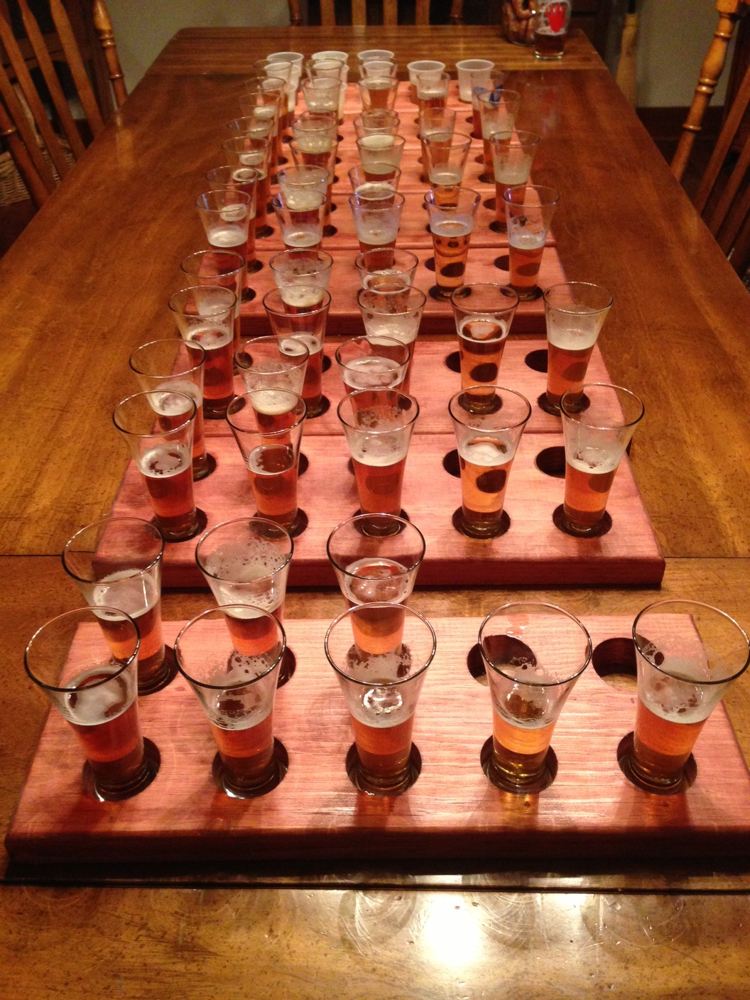

2013 - Year of the IPA (East Coast) 
Date: Saturday, August 24, 2013Participants (8): Aly, Andy, Bruce, Chris, Dean, Frank, Jeff, Justin
| Total (Rank) | Aly | Andy | Bruce | Chris | Dean | Frank | Jeff | Justin | |

Flying Fish - Exit 16 (Andy) |
31.5 - #1 | 5 | 5 | 5 | 3 | 5 | 1 | 3.5 | 3 |
|
Three Heads Brewing - The Kind (Chris) |
24.5 - #2 | 4.5 | 4 | 2 | 3 | 4 | 3 | 3 | 1 |

Oskar Blues- Deviant Dale's IPA (Aly) |
23.5 - #3 | 3.5 | 4 | 3 | 3.5 | 5 | 1 | 2.5 | 1 |
|
Terrapin - Hopsecutioner (Jeff) |
21.5 - #4 | 4 | 3 | 2 | 3 | 4 | 2 | 1.5 | 2 |
|
Shipyard - Monkey Fist IPA (Bruce) |
21.0 - #5 | 1.5 | 4.5 | 1 | 3 | 3 | 2 | 3 | 3 |
|
Fegley's BrewWorks - Hop'solutely (Justin) |
19.5 - #6 | 2 | 1 | 4 | 5 | 1 | 1 | 2.5 | 3 |
|
Barrel Trolley - IPA (Frank) |
19 - #T7 | 2 | 3 | 2 | 4 | 3 | 1 | 3 | 1 |
|
Green Man - IPA (Dean) |
19 - #T7 | 3 | 1 | 1 | 3 | 3 | 3 | 3 | 2 |
2012 - Year of the Porter 
Date: Sunday, September 2, 2012
Participants: Aly, Andy, Bruce, Chris, Dean, Frank, Jeff
Candidates (1): Justin (Porter Presentation)
Resources: Beer Infographic, Porter Beer - Wikipedia
| Total (Rank) | Aly | Andy | Bruce | Chris | Dean | Frank | Jeff | |
|
|
27 - #1 | 4 | 3 | 4 | 4 | 4 | 4 | 4 |
|
|
23.5 - #2 | 5 | 5 | 3 | 3 | 2 | 3 | 2.5 |
|
|
21.5 - #3 | 3 | 4.5 | 1 | 3.5 | 3 | 3 | 3.5 |
|
|
17.5 - #4 | 1 | 3.5 | 1 | 3 | 3 | 3 | 3 |
|
|
15.5 - #5 | 1.5 | 1 | 2 | 3 | 2 | 2 | 4 |
|
|
14 - #T6 | 1 | 2 | 2 | 4 | 1 | 2 | 3 |
|
|
14 - #T6 | 2 | 4 | 1 | 1 | 3 | 1 | 2 |
2011 - Year of the Hefe "Wheat" Beer
Date: Sunday, September 4, 2011Participants (7): Aly, Andy, Bruce, Chris, Dean, Frank, Jeff
2010 - Year of the Belgian-Style beer
Date: Saturday, September 4, 2010Participants (7): Aly, Andy, Bruce, Chris, Dean, Frank, Jeff
Beer in Belgium - Wikipedia
Quick and Dirty Guide to Belgian Beer
2009 - Year of the Comfort Beer
Date: Saturday, September 5, 2009Participants (7): Aly, Andy, Bruce, Chris, Dean, Frank, Jeff
2008 - Micro Brew Bonanza / Year of the Local Beer
2007 - World of Flavors
2006 - Impromptu Beer Tasting
Note: Same day of Hamburg Hamburger Festival